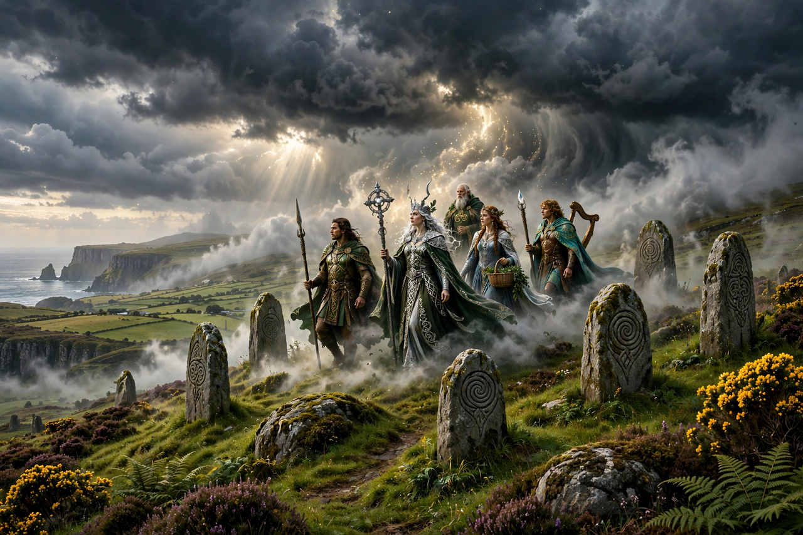

| Mythological Cycle | |
|---|---|
| Tradition | Irish (Celtic) mythology |
| Principal source | Lebor Gabála Érenn (The Book of Invasions) |
| Subject | Successive invasions of Ireland; the Tuatha Dé Danann |
| Other cycles | Ulster Cycle, Fenian Cycle, Cycles of the Kings |

The Mythological Cycle is one of the four great cycles of Irish mythology, a modern scholarly grouping of the medieval Irish tales concerned with the gods and the mythical early history of Ireland. Its principal texts tell of a series of invasions of Ireland by successive peoples, culminating in the arrival of the Milesians (the Gaels themselves), and feature the Tuatha Dé Danann — the god-like people of the goddess Danu — as their central figures.
The cycle's framework text is the Lebor Gabála Érenn ("The Book of the Taking of Ireland", or Book of Invasions), a pseudo-historical compilation assembled by medieval Irish scholars, largely Christian monks, to give Ireland a past that fitted into biblical universal history. It recounts the settlements of Cessair, Partholón, Nemed, the Fir Bolg, the Tuatha Dé Danann and finally the sons of Míl Espáine. Other major tales of the cycle include:
Defeated by the Milesians, the Tuatha Dé Danann are said to have withdrawn into the sídhe — the hollow hills and burial mounds of Ireland — becoming the Aos Sí, the "people of the mounds", who survive in folklore as the fairies. Medieval authors, uneasy with pagan gods, variously presented the Tuatha Dé as fallen angels, demons, or a real ancient people of exceptional skill. Modern scholarship treats them as the euhemerised gods of pre-Christian Ireland.